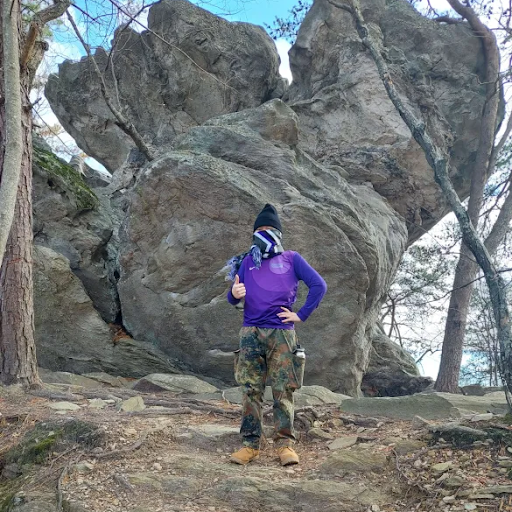

Luke Wang

Me standing a top a mountain covered in several layers
- Personal Background: First generation immigrant, moved from Pennsylvania to NC
- Professional Background: Worked for a Hospital for some years, currently employed at botanical gardens.
- Academic Background: Highschool Diploma
- Background in this Subject: Worked as Web Manager for Niner media
- Primary Computer Platform Windows
- Courses Im Taking and Why
- ITIS 3200 - Intro to Info Security and Privacy: Mandated by the school for graduation.
- ITIS 3135 - Web Based Application Design and Development: Mandated by the school to graduate.
- Funny/Interesting things to remember me by: I dont exist
- I'd also like to Share: I own a blueberry bush.